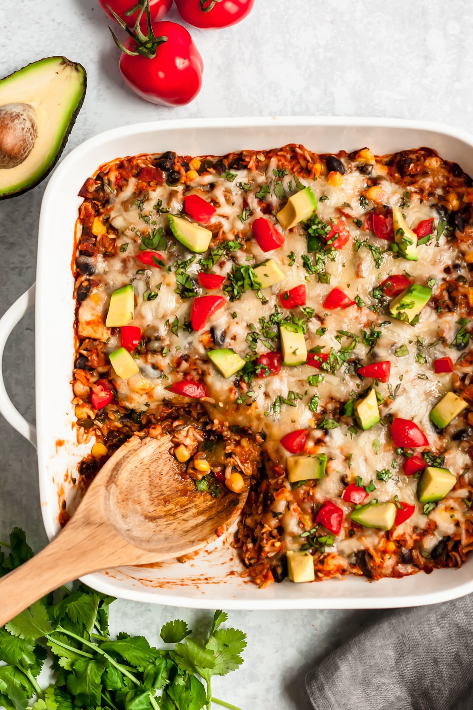

Chicken Enchilada Casserole

Description
As flavorful as it is easy, this is a go-to, guilt-free family favorite!
Ingredients
- 1 cup cooked brown rice or quinoa
- 2 cups cooked chicken, cubed or shredded
- 1 3/4 cups salsa
- 1 4oz can chopped green chiles
- 1/2 cup corn kernels, frozen, canned or roasted
- 1/2 cup canned black beans, drained and rinsed
- 2 tbsp fresh cilantro, chopped
- 1/2 tsp cumin
- 1 tsp chili powder
- 1/2 tsp garlic salt
- salt and pepper to taste, as needed
- 1 cup shredded cheese, divided
- Optional garnish; diced avocado, tomato, and fresh cilantro
Steps
- Preheat oven to 375 degrees F. and prepare an 8x8 or 2 to 2 1/2 qt baking dish with nonstick cooking spray
- In a large bowl, combine brown rice or quinoa, chicken, salsa, green chiles, corn, black beans, cilantro, cumin, chili powder, garlic salt and a 1/2 cup shredded cheese
- Spread mixture into the prepared baking dish. Top with remaining 1/2 cup shredded cheese. Bake uncovered until bubbly and cheese is melted, about 15 minutes
- Serve immediately, garnished with avocado, tomato and cilantro, if desired